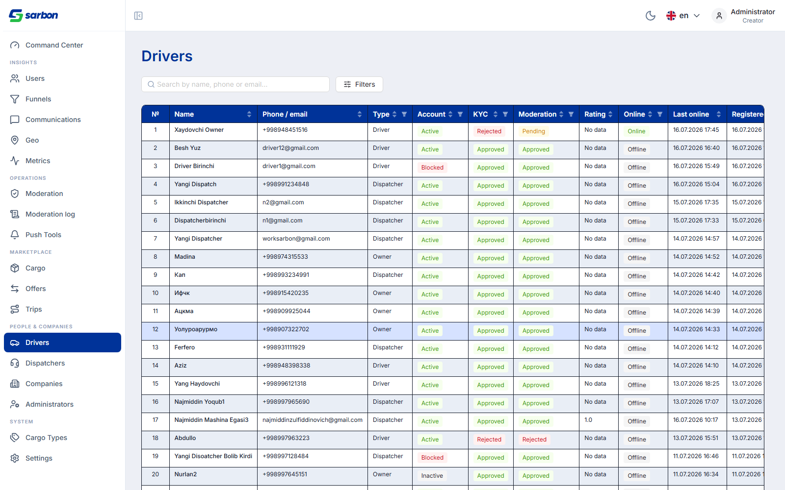
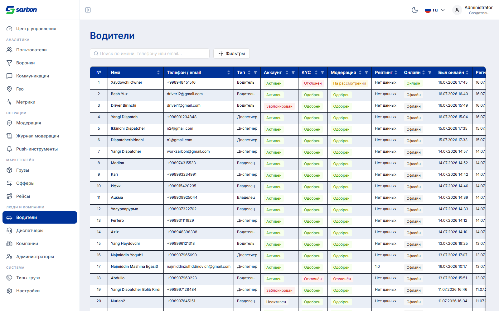
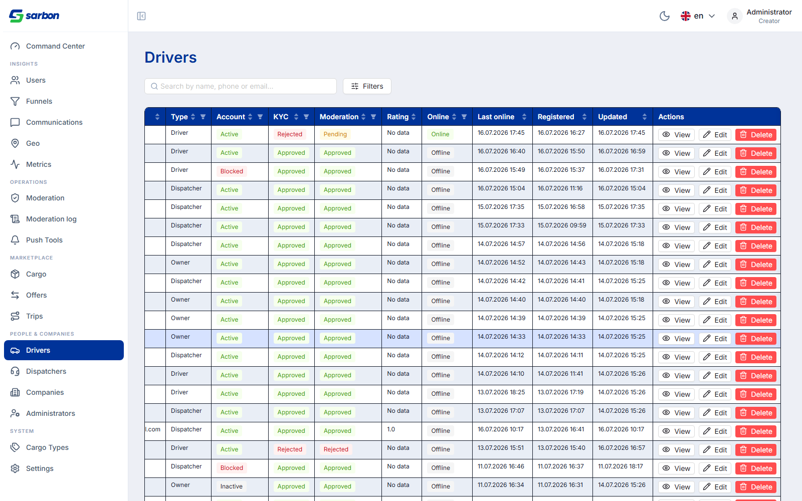
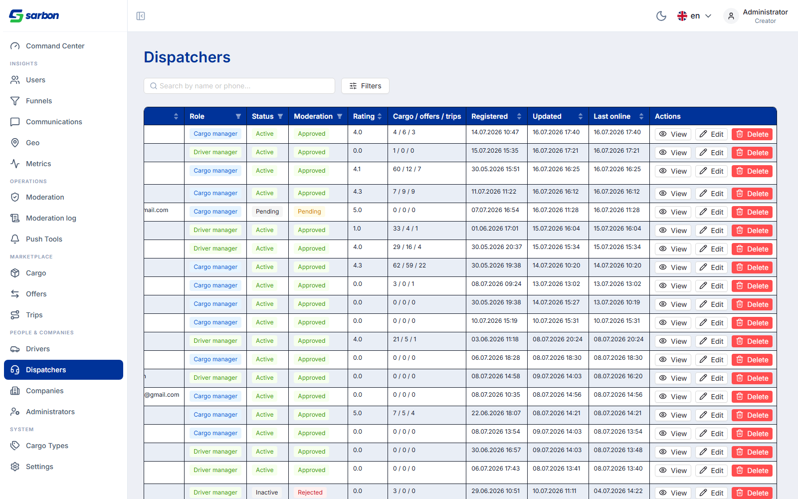
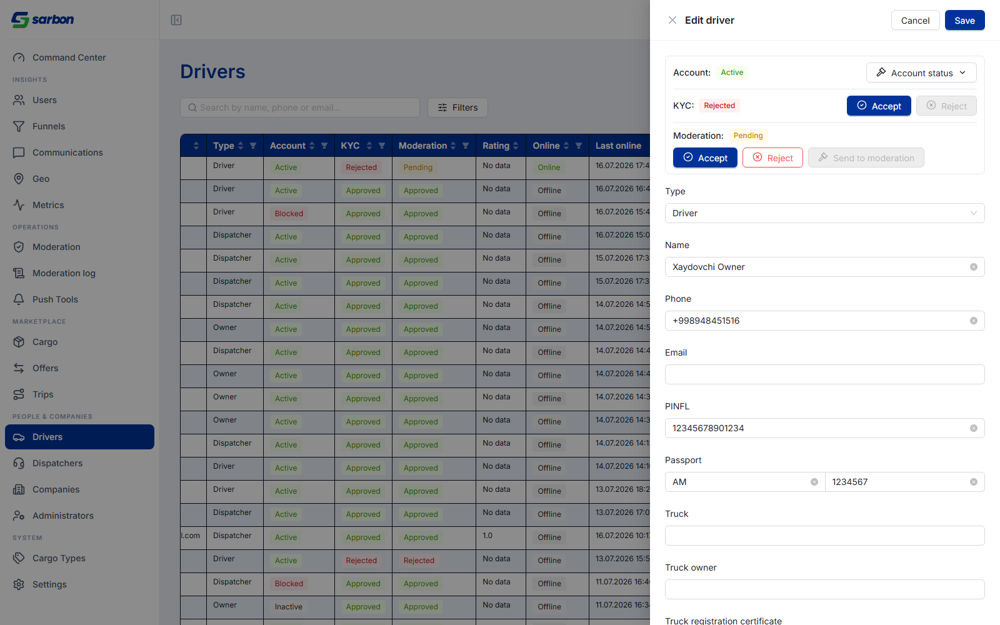
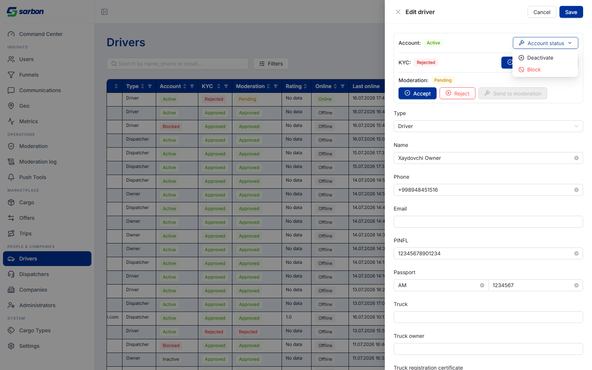
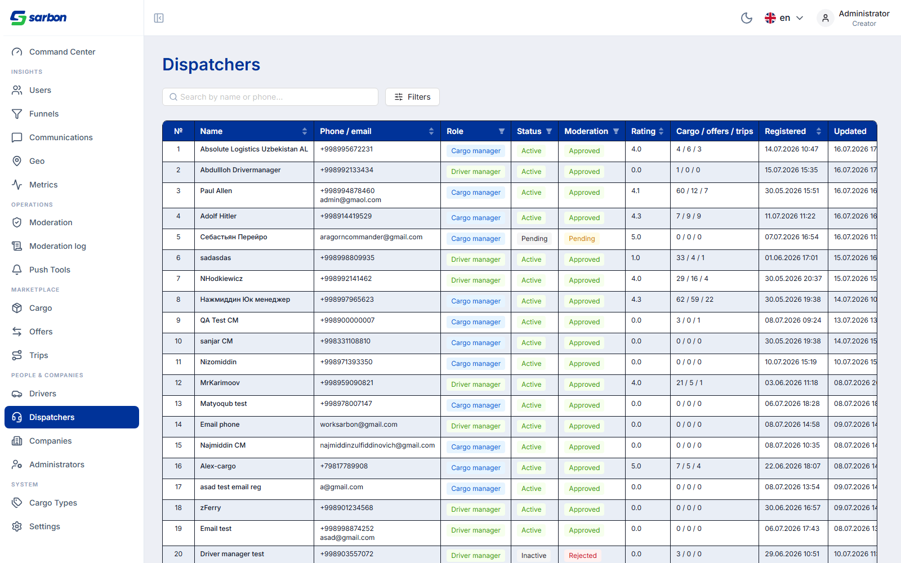
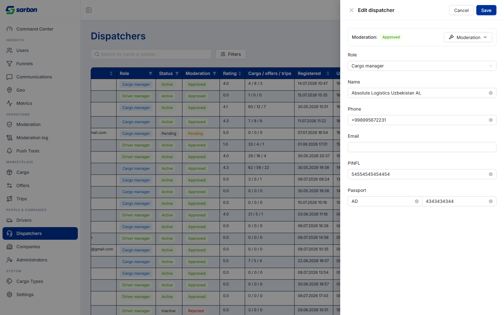
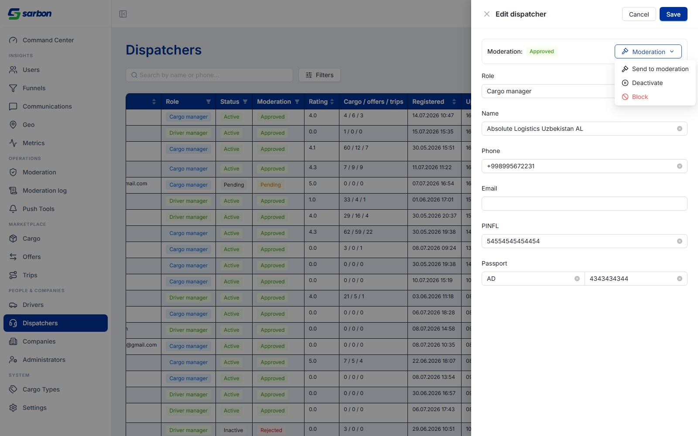
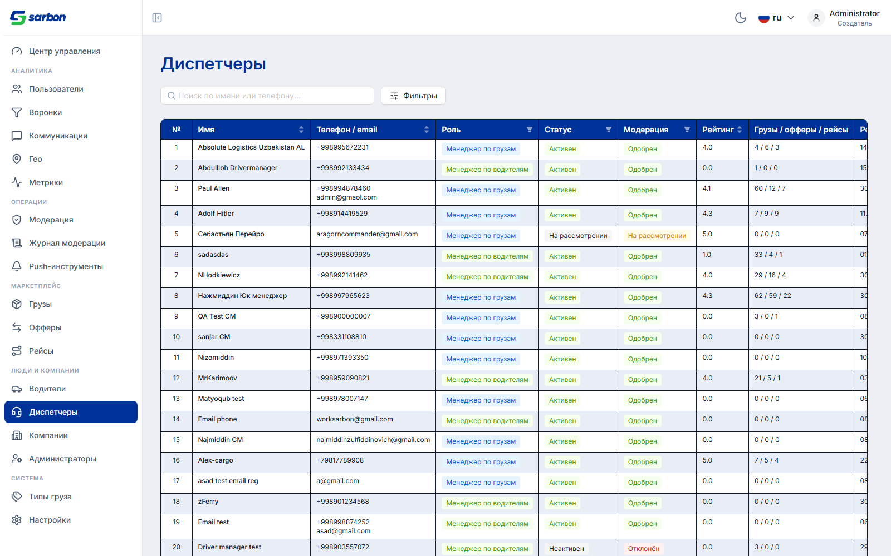

Объект Driver в API несёт два статусных поля: сырое, nullable
account_status и вычисляемое effective_status =
COALESCE(NULLIF(TRIM(account_status),''),'active'). По контракту:
«account_status null/пустой — водитель функционально активен». Фронт рендерил сырое поле —
поэтому большинство водителей (у которых статус никогда не трогали) показывались как «No data»,
и по ним же падал activate: null-водитель уже активен, /moderation/inactive
принимает null как источник, а /moderation/activate — нет. Отсюда «деактивируй, потом
активируй — работает».
Теперь колонка показывает эффективный статус (null → Active). Никаких «No data»
— они остались только у настоящего пустого рейтинга. Значение используется и в сортировке, фильтрах и
признаке isBlocked.


Кнопка «Send to moderation» убрана из колонки действий. Вся модерация теперь живёт внутри модалки редактирования.


Новый блок в модалке редактирования водителя делает все три статусные оси управляемыми:
Account status, гейтится по статусу)./kyc/accept, /kyc/reject.
Дропдаун «Account status» для уже активного водителя предлагает только
Deactivate и Block — Activate скрыт (раньше именно он давал 400 на null-статусе).
Кнопка «Send to moderation» задизейблена, пока статус модерации ≠ Rejected: у водителя
resubmit строго rejected → pending (иначе 400 driver_not_rejected).

Ось жизненного цикла диспетчера — moderation_status (а не account_status,
который у диспетчера захардкожен в «active»). Секция Moderation переехала в модалку; isBlocked
теперь читается из moderation_status. Resubmit у диспетчера работает из любого статуса, поэтому
остаётся в дропдауне модалки.




| Гейт | Результат |
|---|---|
pnpm build (tsc -b + vite) | exit 0 |
eslint --max-warnings 0 (изменённые файлы) | чисто |
vitest run | 1754 / 1754 (165 файлов) |
| Локали | 2 новых ключа × 15 локалей |
| Живой прогон (staging, admin) | 10 скриншотов, поведение подтверждено |
src/utils/adminLifecycleStatus.ts (new) + тестsrc/components/shared/admin/adminModerationRoutes.ts, AdminModerationActions.tsxsrc/pages/admin/drivers/{AdminDriversPage,AdminDriverEditDrawer}.tsxsrc/pages/admin/drivers/components/{AdminDriverStatusEditor(new),AdminDriverDetailDrawer}.tsxsrc/pages/admin/dispatchers/{AdminDispatchersPage,AdminDispatcherEditDrawer}.tsxpublic/locales/*.json ×15